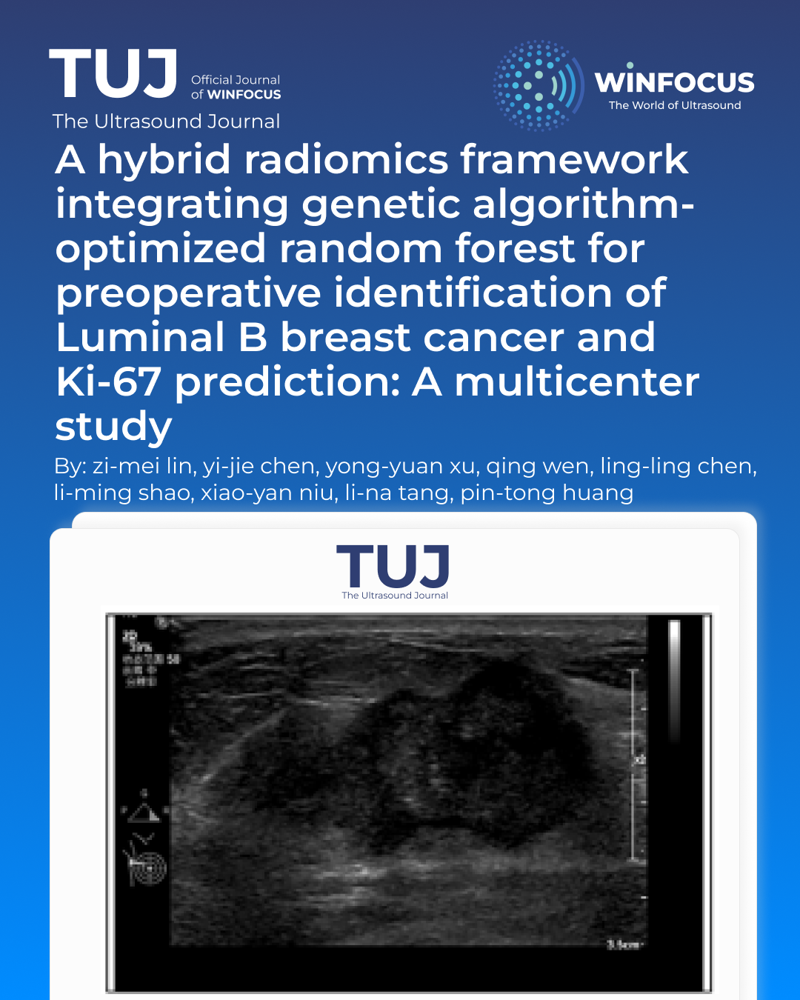

A hybrid radiomics framework integrating genetic algorithm-optimized random forest for preoperative identification of Luminal B breast cancer and Ki-67 prediction: A multicenter study
Keywords:
Breast Cancer, Radiomics, UltrasoundAbstract
Background: Preoperative identification of Luminal B breast cancer remains a clinical challenge. This study aimed to develop an ultrasound radiomics framework integrating tumoral and peritumoral information for preoperative identification of Luminal B subtype and prediction of Ki-67 status.
Methods: We retrospectively analyzed 1,944 patients from three centers. The development cohort from Centers One and Two was divided by stratified sampling into a training set (n = 1,434) and an internal test set (n = 253), and an independent cohort from Center Three (n = 257) was used for external validation. Lesion-containing ROIs were processed using deep learning-assisted segmentation and standardized for downstream analysis. Radiomic features were extracted, and a genetic algorithm (GA) was coupled with a random forest (RF) classifier to construct two models: one for Luminal B classification and another for predicting Ki-67 expression.
Results: The combined tumor-peritumoral model achieved the highest performance, with the Luminal B classifier showing AUCs of 0.876 (training), 0.693 (test), and 0.786 (external validation). The Ki-67 prediction model yielded AUCs of 0.890 (training) and 0.858 (test), though external validation (AUC=0.661) was limited by dataset distribution. The Delong test confirmed that combined ROIs significantly outperformed tumor-only models, with NRI and IDI tests further validating the added value of peritumoral features.
Conclusions: Ultrasound radiomics integrating tumoral and peritumoral regions can support the preoperative identification of Luminal B breast cancer, and peritumoral region analysis significantly enhances predictive performance. The framework also shows potential for predicting Ki-67 status within this subtype.
References
1. Perou CM, Sørlie T, Eisen MB, van de Rijn M, Jeffrey SS, Rees CA, et al. Molecular portraits of human breast tumours. Nature. 2000;406(6797):747-52. doi: 10.1038/35021093.
2. Cheang MC, Chia SK, Voduc D, Gao D, Leung S, Snider J, et al. Ki67 index, HER2 status, and prognosis of patients with luminal B breast cancer. J Natl Cancer Inst. 2009;101(10):736-50. doi: 10.1093/jnci/djp082.
3. Ades F, Zardavas D, Bozovic-Spasojevic I, Pugliano L, Fumagalli D, de Azambuja E, et al. Luminal B breast cancer: molecular characterization, clinical management, and future perspectives. J Clin Oncol. 2014;32(25):2794-803. doi: 10.1200/JCO.2013.54.1870.
4. Loo SK, Yates ME, Yang S, Oesterreich S, Lee AV, Wang XS. Fusion-associated carcinomas of the breast: Diagnostic, prognostic, and therapeutic significance. Genes Chromosomes Cancer. 2022;61(5):261-73. doi: 10.1002/gcc.23020.
5. Li Y, Du W, Yang R, Wei X, Li H, Zhang X. Copper Chaperone for Superoxide Dismutase Subtypes as a Prognostic Marker in Luminal B Breast Cancer. Clin Med Insights Oncol. 2024;18:11795549231219239. doi: 10.1177/11795549231219239.
6. Samiei S, Simons JM, Engelen SME, Beets-Tan RGH, Classe JM, Smidt ML. Axillary Pathologic Complete Response After Neoadjuvant Systemic Therapy by Breast Cancer Subtype in Patients With Initially Clinically Node-Positive Disease: A Systematic Review and Meta-analysis. JAMA Surg. 2021;156(6):e210891. doi: 10.1001/jamasurg.2021.0891.
7. Meyer-Wilmes P, Huober J, Untch M, Blohmer JU, Janni W, Denkert C, et al. Long-term outcomes of a randomized, open-label, phase II study comparing cabazitaxel versus paclitaxel as neoadjuvant treatment in patients with triple-negative or luminal B/HER2-negative breast cancer (GENEVIEVE). ESMO Open. 2024;9(5):103009. doi: 10.1016/j.esmoop.2024.103009.
8. Camargo-Herrera V, Castellanos G, Rangel N, Jiménez-Tobón GA, Martínez-Agüero M, Rondón-Lagos M. Patterns of Chromosomal Instability and Clonal Heterogeneity in Luminal B Breast Cancer: A Pilot Study. Int J Mol Sci. 2024;25(8):4478. doi: 10.3390/ijms25084478.
9. Badwe RA, Parmar V, Nair N, Joshi S, Hawaldar R, Pawar S, et al. Effect of Peritumoral Infiltration of Local Anesthetic Before Surgery on Survival in Early Breast Cancer. J Clin Oncol. 2023;41(18):3318-28. doi: 10.1200/JCO.22.01966.
10. Jiang L, You C, Xiao Y, Wang H, Su GH, Xia BQ, et al. Radiogenomic analysis reveals tumor heterogeneity of triple-negative breast cancer. Cell Rep Med. 2022;3(7):100694. doi: 10.1016/j.xcrm.2022.100694.
11. Zhang J, Wu J, Zhou XS, Shi F, Shen D. Recent advancements in artificial intelligence for breast cancer: Image augmentation, segmentation, diagnosis, and prognosis approaches. Semin Cancer Biol. 2023;96:11-25. doi: 10.1016/j.semcancer.2023.09.001.
12. Kurozumi S, Ball GR. Research on biomarkers using innovative artificial intelligence systems in breast cancer. Int J Clin Oncol. 2024;29(11):1669-75. doi: 10.1007/s10147-024-02602-3.
13. Qi YJ, Su GH, You C, Zhang X, Xiao Y, Jiang YZ, et al. Radiomics in breast cancer: Current advances and future directions. Cell Rep Med. 2024;5(9):101719. doi: 10.1016/j.xcrm.2024.101719.
14. Conti A, Duggento A, Indovina I, Guerrisi M, Toschi N. Radiomics in breast cancer classification and prediction. Semin Cancer Biol. 2021;72:238-50. doi: 10.1016/j.semcancer.2020.04.002.
15. Davey MG, Davey MS, Boland MR, Ryan ÉJ, Lowery AJ, Kerin MJ. Radiomic differentiation of breast cancer molecular subtypes using pre-operative breast imaging - A systematic review and meta-analysis. Eur J Radiol. 2021;144:109996. doi: 10.1016/j.ejrad.2021.109996.
16. Gu X, Angelov PP, Soares EA. A Self-Adaptive Synthetic Over-Sampling Technique for Imbalanced Classification. Int J Intell Syst. 2020;35:923-43. doi: 10.1002/int.22245.
17. Malik JA, Ahmed S, Jan B, Bender O, Al Hagbani T, Alqarni A, et al. Drugs repurposed: An advanced step towards the treatment of breast cancer and associated challenges. Biomed Pharmacother. 2022;145:112375. doi: 10.1016/j.biopha.2021.112375.
18. Lin P, Xie W, Li Y, Zhang C, Wu H, Wan H, et al. Intratumoral and peritumoral radiomics of MRIs predicts pathologic complete response to neoadjuvant chemoimmunotherapy in patients with head and neck squamous cell carcinoma. J Immunother Cancer. 2024;12(11):e009616. doi: 10.1136/jitc-2024-009616.
19. Yao J, Jia X, Zhou W, Zhu Y, Chen X, Zhan W, et al. Predicting axillary response to neoadjuvant chemotherapy using peritumoral and intratumoral ultrasound radiomics in breast cancer subtypes. iScience. 2024;27(9):110716. doi: 10.1016/j.isci.2024.110716.
20. Luo S, Chen X, Yao M, et al. Intratumoral and peritumoral ultrasound-based radiomics for preoperative prediction of HER2-low breast cancer: a multicenter retrospective study. Insights Imaging. 2025;16(1):53. doi: 10.1186/s13244-025-01934-6.
21. Luo S, Chen X, Yao M, Ying Y, Huang Z, Zhou X, et al. High Expression of PKCζ And CTNNBIP1 Is Associated With Poor Prognosis in Luminal B Breast Cancer. Cancer Genomics Proteomics. 2025;22(4):538-56. doi: 10.21873/cgp.20520.
22. Zagami P, Fernandez-Martinez A, Rashid NU, Hoadley KA, Spears PA, Curigliano G, et al. Association of PIK3CA Mutation With Pathologic Complete Response and Outcome by Hormone Receptor Status and Intrinsic Subtype in Early-Stage ERBB2/HER2-Positive Breast Cancer. JAMA Netw Open. 2023;6(12):e2348814. doi: 10.1001/jamanetworkopen.2023.48814.
23. Du X, Zhou Z, Shao Y, Qian K, Wu Y, Zhang J, et al. Immunoarchitectural patterns as potential prognostic factors for invasive ductal breast cancer. NPJ Breast Cancer. 2022;8(1):26. doi: 10.1038/s41523-022-00389-y.

Downloads
Published
Issue
Section
License
Copyright (c) 2026 Zimei Lin, Yi-jie Chen, Yong-yuan Xu, Qing Wen, Ling-ling Chen, Li-ming Shao, Xiao-yan Niu, Li-na Tang, Pintong Huang (Author)

This work is licensed under a Creative Commons Attribution-NonCommercial 4.0 International License.
This is an Open Access article distributed under the terms of the Creative Commons Attribution License (https://creativecommons.org/licenses/by-nc/4.0) which permits unrestricted use, distribution, and reproduction in any medium, provided the original work is properly cited.
Authors retain the copyright for their published work. No formal permission will be required to reproduce parts (tables or illustrations) of published papers, provided the source is quoted appropriately and reproduction has no commercial intent.
How to Cite